INDEX
- Prerequisites
- Basic Resources
- Advanced Resources
Prerequisites
In this section you will learn :
Basics of Digital Electronics
In this section you will learn the basics of Digital Circuits.
Let us start with the Binary number system.
Ever wondered how the computer understands your program written in ‘C’ or ’python’ or any other language? Well it does not understand these languages. It only understands the machine language or binary logic. It is the compiler that converts your program into the machine language which the computer understands. This language contains only 2 elements ‘0’ and ‘1’, which form a number system called the binary number system. Hence, as a digital circuit designer, it is important for us to understand this number system.
Binary Number system : As said earlier, it is a number system consisting of only two numbers 0 and 1. So how do we represent 2? The same way we have 0-9 in the decimal system and we represent 10 as ‘ten’ in the decimal system.
Operations in binary number system : Refer this link for operations in Binary number system.
So how are the binary numbers used in digital circuits?
In digital circuits, the voltage levels are represented by a binary 1 (for high voltage) and 0 (for low voltage). Refer the following sections at this link to understand more :
- Voltage Tolerance of TTL Gate Inputs
- Voltage Tolerance of CMOS Gate Inputs
Let us now learn about logic gates in digital circuits.
Logic gates are electronic devices that perform logical operations on input signals. Following is the list of logic gates :
- NOT
- AND
- NAND
- OR
- NOR
- X-OR
- X-NOR
Check the video below to understand the working of NOT, AND and NAND gates.
Now that you have understood how to create Truth tables for NOT, AND and NAND, can you complete Truth Table below for the remaining gates?
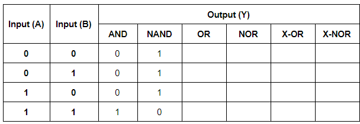
You can use the circuitverse link below to complete the Truth Table.
Confirm that the truth table for the gates is as below:
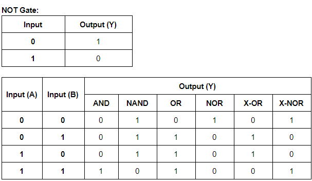
If your truth table does not match the above truth table, check the circuit and deduce the truth table again.
Simple hack to remember the truth table of the above logic gates:
- NOT : Gives opposite of input
- AND : Output is ‘1’ only if all inputs are ‘1’, else ‘0’
- NAND : Opposite of AND
- OR : Output is ‘1’ if any of the inputs is ‘1’
- NOR : Opposite of OR
- X-OR : Output is ‘1’ if there are odd number of input ‘1’
- X-NOR: Opposite of X-OR
Now that you know how to deduce the truth table for basic gates, here is a self learning activity.
Consider the circuit below. Convert the numbers in your eYRC team ID into Binary and consider the lowest three bits as the input to the circuit. For example, if your team ID is 502, binary is ‘111110110’ and the lowest three bits for input become A=1, B=1 and C=0. Now deduce the outcome ‘Y’ for the circuit for the respective inputs using your team ID.

Note: This is a self learning activity and we expect you to honestly deduce the output for your inputs. You are free to refer to any resources. Once you have deduced the output, refer to the truth table at this link to confirm your output is correct. If not, work on the circuit again.
We will now study more combinational digital circuits. Watch the video below that explains the working of Half Adder.
Now use the circuit below and the internet to understand the working of Full Adder, Multiplexer and Demultiplexer.
The circuits discussed till now can be categorized into combinational logic circuits. In these types of circuits, the output of the circuit depends only on present input and does not depend on previous outputs. Contrary, the other category of digital circuits is sequential logic circuits where the output depends on current input, as well as, previous output.
Watch the video below:
Now that you know the basics of latches and flip-flops, deduce the state table for various flip-flops listed below.
| S | R | Q(t+1) |
|---|---|---|
| 0 | 0 | |
| 0 | 1 | |
| 1 | 0 | |
| 1 | 1 |
| J | K | Q(t+1) |
|---|---|---|
| 0 | 0 | |
| 0 | 1 | |
| 1 | 0 | |
| 1 | 1 |
You can use the circuitverse link below to complete the state table.
Confirm that the state table is as below:
| D | Q(t+1) |
|---|---|
| 0 | 0 |
| 1 | 1 |
| T | Q(t+1) |
|---|---|
| 0 | Q(t) |
| 1 | Q(t)' |
| S | R | Q(t+1) |
|---|---|---|
| 0 | 0 | Q(t) |
| 0 | 1 | 0 |
| 1 | 0 | 1 |
| 1 | 1 | - |
| J | K | Q(t+1) |
|---|---|---|
| 0 | 0 | Q(t) |
| 0 | 1 | 0 |
| 1 | 0 | 1 |
| 1 | 1 | Q(t)’ |
With this we have completed the basics of digital logic circuits.
Basic Resources
In this section you will learn :
- Two Way Switch
- Ripple Carry Adder
- Seven Segment Display
- Arithmetic Logic Unit
- Universal Shift Register
Two Way Switch
1. Introduction
1.1 What is a Two Way Switch ?
A two way switch can be explained using a simple example. Consider a room with two switches and one bulb. Now, If both the switches are in OFF state or ON state the bulb will not glow. But, if either of the two switch is ON the bulb will glow. If we have to relate this with digital electronics, the logic can be realised using an X-OR gate.
1.2 X-OR Gate
XOR gate (pronounced as Exclusive OR) is a digital logic gate that gives a TRUE (1 or HIGH) output when odd number of inputs are TRUE.


2. Circuit Diagram
Note: LED does not conduct in both direction. This circuit is just a representation of the logic.

3. Code in Verilog
3.1 Verilog Code(RTL Description)
Dataflow Modelling:
//Verilog code in Dataflow style
module TWS(
input s1,s2, //Define two Inputs pins
output z); //Define one output pin
assign z = (s1^s2); //XOR the 2 input pins(s1,s2) and assign
//the output to the output pin(X1)
endmodule
Behavioural Modelling:
//Verilog code in Behavioural style
module TWS(
input s1,s2, //Define two inputs(switches)
output reg z //Define the output pin
);
always @ (s1,s2) //Every time the input changes, the output
//is to be updated
begin
if (s1==s2) //if both switches are in same position,
//output is LOW
z = 0;
else
z=1; //if the position of switches are not equal,
//output is HIGH
end
endmodule
3.2 Testbench Code(Verilog)
module TWS_tb;
reg s1;reg s2; //define input
wire z; //define output
TWS_Behavioural uut(.s1(s1),.s2(s2),.z(z)); //Map testbench ports with
//DUT ports
initial begin
s1 = 0; s2 = 0;#100; //different combinations of input
s1 = 0; s2 = 1;#100;
s1 = 1; s2 = 0;#100;
s1 = 1; s2 = 1;#100;
#100;
end
endmodule
4. Implementing on Quartus
To Implement the design in Quartus Software, follow these steps: (For more detailed information on the following steps, refer Getting Started with Quartus section from Task 0)
Note: For this demonstration, the language used is Verilog HDL.
Family: Cyclone IV E; Chip Name: EP4CE22F17C6
- Start a new project in Quartus Lite software
Create a new Verilog or VHDL file.Here we create a Verilog file for demonstration. Same procedure can be followed to VHDL file.
Type the above main code in this file and make sure that the Module name and the file name is same.
- Go to Project → Set as Top-Level Entity.
- Go to Processing → Start Compilation.
- After successful compilation, you will see these Green check marks.


Note: We have used the Dataflow Verilog code for this demonstration.

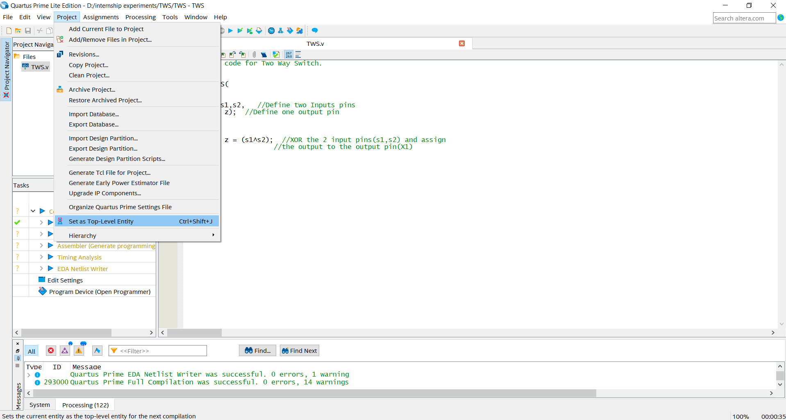
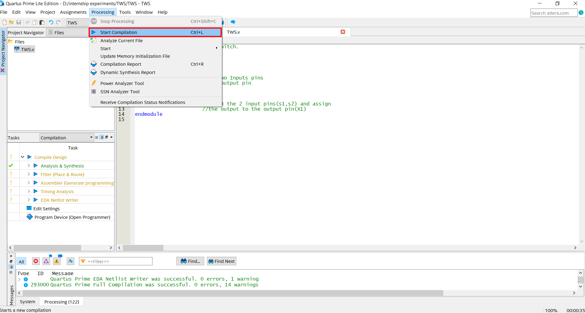
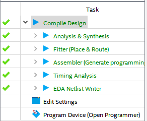
5. RTL Circuit of the implemented design
The below two figures show the RTL Circuit of the two different types of modelling (Dataflow and behavioural). As it can be seen, both types of modelling resulted in the same type of design. Although might not be true for more complex designs (Behavioural modelling results in a more complex circuit than Dataflow or Structural), intelligent and smart behavioural design can lead to really well optimised circuits.
Steps to get RTL circuit.
- Go to Tools → Netlist Viewers → RTL Viewer.
- The below figure shows the equivalent RTL circuit in both Dataflow and Behavioural modelling styles.
-
Create a NEW Verilog file in Quartus Prime. Type in the TestBench code provided in this document and SAVE the file with the same name as the module name.
- Go to Assignments→Settings.
Navigate to Simulation under EDA Tool Settings. Set the language as Verilog HDL. Select Compile Test Bench and then click on Test Benches.
- Click on New, this opens another dialogue box.
Now type in the testbench name(In this design , its tb_TWS). Now click on the highlighted browse button. Find the testbench file(it can be found in the project directory) and click on Open. Now click on Add,then OK.
Go to menu Processing → Start → Start Analysis & Elaboration. After this click on Start Analysis & Synthesis on the same drop box.
Go to menu Tools → Run Simulation Tool → RTL Simulation to automatically run the EDA simulator(ModelSim-Altera) and to compile all necessary design files.
Finally ModelSim-Altera tool opens up with simulated waveform. click on Run all icon on the tool box to display the waveform.
- Start a New Project in Quartus Lite software.
You will see this screen after completing all steps. For detailed steps refer the Getting Started with Quartus section from Task 0.
We will be using Verilog HDL Code throughout this project. Create a New Verilog HDL file.
Type the code for full adder in this file.
Go to File→Save as and save the file.
Now, Create a New Verilog HDL file again and type the code for 2-bit Ripple Carry Adder in this file.
- Go to File→Save as and save the file.
Goto Project→Set as Top-Level Entity. The ripple carry adder file is our main file and make sure you have selected this file while setting the top level entity.
- Goto Processing→Start Compilation.
You can verify whether all the files are compiled successfully by checking the highlighted tabs i.e. Messages and Tasks tab.
- Goto Tools→Netlist Viewers→RTL Viewer.
- The below figure shows the equivalent RTL circuit of full adder.
Create a New Verilog HDL file in Quartus Prime. Type in the TestBench code provided in this document and save the file with the same name as the module name.
- Go to Assignments→Settings.
Navigate to Simulation under EDA Tool Settings. Set the language as Verilog HDL. Select Compile TestBench and then click on Test Benches.
- Click on New, this opens another dialogue box.
Now type in the TestBench name(In this design , its tb_ripple_carry_adder). Now click on the highlighted Browse button.Find the TestBench file(it can be found in the project directory) and click on Open. Now click on Add, then OK.
- Go to Processing→Start Compilation.
Go to Tools → Run Simulation Tool → RTL Simulation to automatically run the EDA simulator(ModelSim-Altera) and to compile all necessary design files.
Finally ModelSim-Altera tool opens up with simulated waveform. click on Run all icon on the tool box to display the waveform.
The Common Cathode Display (CCD) – In the common cathode display, all the cathode connections of the LED’s are joined together to logic “0” or ground. The individual segments are illuminated by application of a “HIGH”, logic “1” signal to the individual Anode terminals.
The Common Anode Display (CAD) – In the common anode display, all the anode con- nections of the LED’s are joined together to logic “1” and the individual segments are illuminated by connecting the individual Cathode terminals to a “LOW”, logic “0” signal.
- Create a New Project with the following settings.
- Create a New Verilog HDL file. As we will be demonstrating using Verilog HDL code so select Verilog HDL file. Use the code for Seven Segment Display mentioned above in the code section in this document.
Go to File Save as. Enter the Name of file (it should be same as module/entity name), Enter correct file extension, for VHDL it is .vhd and for Verilog HDL it is .v and then Click on Save.
Goto Project menu Set as Top-Level Entity. The Seven_Segment_SDisplay file is our main file and make sure you have selected this file while setting the top level entity.
Goto Processing Start Compilation. It takes sometime to complete. You can verify whether all the files are compiled successfully by checking the highlighted tabs i.e. Messages and Tasks tab.
- Goto Tools→Netlist Viewers→RTL Viewer.
The below figure shows the equivalent RTL circuit of BCD decoder (4:7) or the design of Seven Segment Display using behavioral modelling.
- Create a New Verilog HDL file. Type in the Testbench code provided in this document and save the file with the same name as the module name.
- Go to Assignments→Settings.
Navigate to Simulation under EDA Tool Settings.Set the language as VHDL. Select Compile Test Bench and then click on Test Benches. You can find a detailed tutorial for setting a Test Bench file for simulation in the Getting Started with Quartus section from Task 0.
Click on Processing Start Compilation. This process will check for any illegal statement occured in any of the files and give the error messages in the Messages section.
- Assign clock pulse to the inputs BCDNos[0 to 3] as per the given table and run the simulation.
After running the simulation you can see the following results, also you can notice for BCDNos "1010" to "1111" the output is zero because we mention the condition for input greater than 9 the output is null or zero.
Then Go to Tools -> Run Simulation Tool -> RTL Simulation to automatically run the EDA simulator(ModelSim-Altera) and to compile all necessary design files.
Finally ModelSim-Altera tool opens, Add the I/O pins as shown in the below figure. Double click on the testbench file under ’Library’ section,this adds the signals under ’Object’ section. Start the simulation and add the test bench file.Then select all the signals (A , B and C) and add it to ’wave’section.
- Start the simulation by clicking on the run all button in tool bar.
Navigating the simulation At this point you should have successfully run the simulation, but the waveform window is rather small and hard to see. We can move around in the simulation and see the value of the signals. Look for the cursor, a yellow vertical line in the waveform viewer, with the time in yellow at the bottom. You can use this line to move left or right in the waveform viewer and also zoom-in and zoom-out.
- Addition
- Subtraction
- Multiplication
- Division
- Increment
- Decrement
- Bitwise AND & NAND
- Bitwise OR & NOR
- Bitwise NOR & XNOR
- Shift Right & Shift Left
- Rotate Right & Rotate Left
Start a New Project in Quartus Lite software
You will see this screen after completing all the steps. For detailed steps refer the Getting Started with Quartus section from Task 0.
We will be using Verilog throughout this project. Create a New Verilog HDL file.
- Type the code for 8-bit ALU in this file.
- Go to File→Save as and save the file.
Go to Project→Set as Top-Level Entity. The ALU file is our main file and make sure you have selected this file while setting the top level entity.
- Goto Processing→Start Compilation.
You can verify whether all the files are compiled successfully by checking the highlighted tabs i.e. Messages and Tasks tab.
- Goto Tools→Netlist Viewers→RTL Viewer.
- The below figure shows the equivalent RTL circuit of 8-bit ALU.
- Create a New Verilog file in Quartus Prime.Type in the TestBench code provided in this document and save the file with the same name as the module name
- Go to Assignments→Settings.
Navigate to Simulation under EDA Tool Settings. Set the language as Verilog HDL. Select Compile TestBench and then click on Test Benches.
- Click on New, this opens another dialogue box.
Now type in the TestBench name(In this design , its tb_ripple_carry_adder). Now click on the highlighted Browse button.Find the TestBench file(it can be found in the project directory) and click on Open. Now click on Add,then OK.
- Go to Processing→Start Compilation
Go to Tools→Run Simulation Tool→RTL Simulation to automatically run the EDA simulator (ModelSim-Altera) and to compile all necessary design files.
Finally ModelSim-Altera tool opens up with simulated waveform. Click on Run all icon on the tool box to display the waveform.
- Serial In Serial Out shift register
- Serial In parallel Out shift register
- Parallel In Serial Out shift register
- Parallel In parallel Out shift register
- Create a New Project using the Project Wizard.
- Create a New Verilog File.
Type in the Verilog code provided in this Document and save the file(make sure file name is same as module name).
Compile the Design either by double clicking COMPILE DESIGN or clicking on the Play button.
Upon successful compilation, to view the RTL Circuit, Go to TOOLS→NETLIST VIEWERS→RTL VIEWER.
- Create a new verilog file in Quartus Prime.
Type in the Testbench code provided in this document and save the file with the same name as the module name.
- Go to ASSIGNMENTS→SETTINGS
- Navigate to SIMULATION under EDA TOOL SETTINGS
Set the language (FORMAT FOR OUTPUT NETLIST) as Verilog HDL. Select COMPILE TEST BENCH and then click on TEST BENCHES...
Click on NEW, this opens another dialogue box. Now type in the testbench name(In this design , its Universal_Shift_Register_tb). Now click on thehighlighted browse button
Find the testbench file(it can be found in the project directory) and click on OPEN.
Now click on ADD,then OKAY, then OKAY again and finally click on APPLY
To start the simulation, go to TOOLS -> RUN SIMULATION TOOL -> RTL SIMULATION. This will open ModelSim and display the simulation waveform.
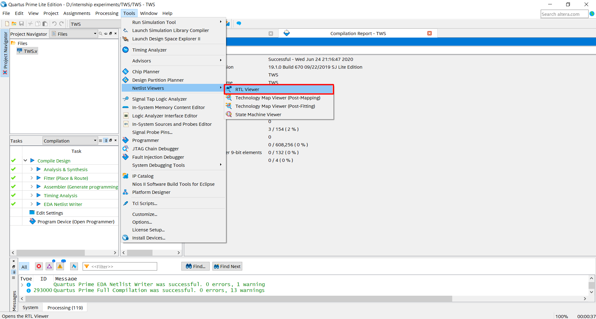

6. Implementing on Modelsim
The TestBench shown here is a Verilog TestBench. For more detailed procedure on using ModelSim, Refer Getting Started with Quartus section from Task 0.
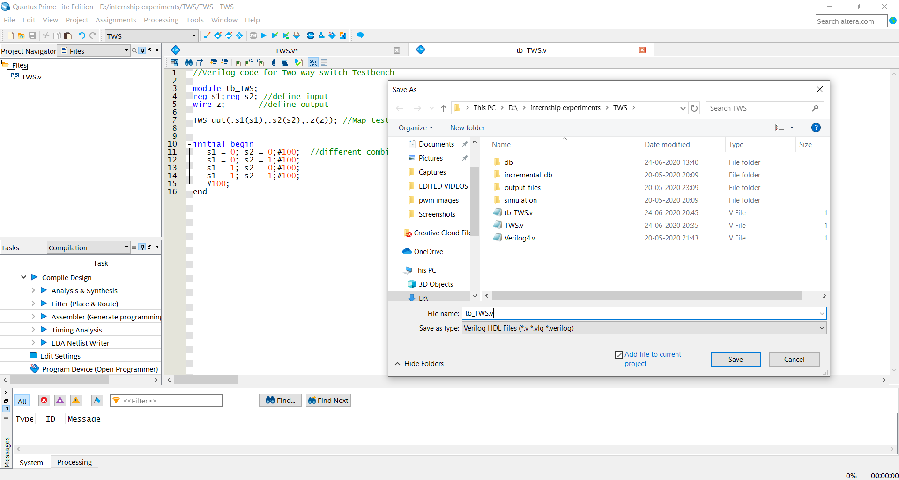
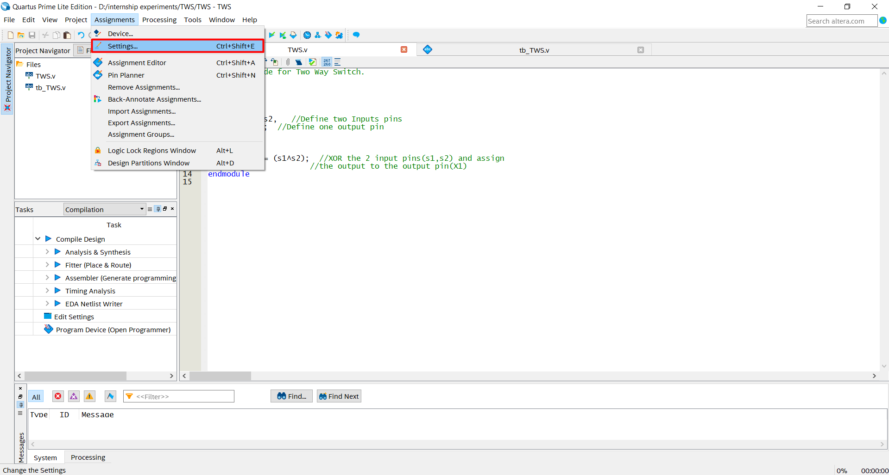

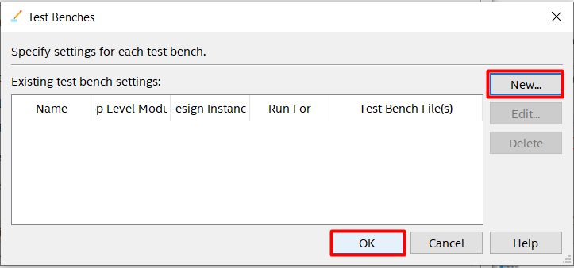

Functional Simulation using NativeLink Feature


7. Testing the Design
What you see below is the simulation waveform obtained in ModelSim. Consider the Verilog design, from the waveform, we can see that when s1 = 0 and s2 = 0 the output z = 0. When s1 = 0 and s2 = 1 the output z = 1. When s1 = 1 and s2 = 0 the output z = 1. When s1 = 1 and s2 = 1 the output z= 0. This is the logic of a XOR Gate. The same can be observed in the VHDL design.Hence the design has been verified.
7.1 Simulation waveform of the Verilog Design

1. Introduction
Full Adder is an adder which adds three inputs and produces two outputs. The first two inputs are A and B and the third input is an input carry, C-IN. The output carry is designated as C-OUT and the Sum output is designated as S.
Multiple full adder circuits can be cascaded in parallel to add an N-bit number. For an N- bit parallel adder, there must be N number of full adder circuits. A ripple carry adder is a logic circuit in which the carry-out of each full adder is the carry in of the succeeding next most significant full adder. It is called a ripple carry adder because each carry bit gets rippled into the next stage. We obtain an output carry (C-OUT) and an N- bit sum (S).
For this project we will be using the full adder design for our 2-bit ripple carry adder.

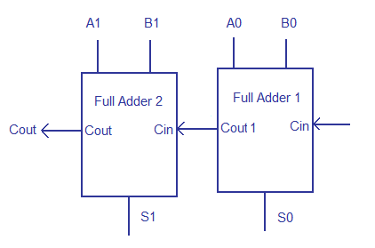
| A | B | Cin | Sum | Carry |
|---|---|---|---|---|
| 0 | 0 | 0 | 0 | 0 |
| 0 | 0 | 1 | 1 | 0 |
| 0 | 1 | 0 | 1 | 0 |
| 0 | 1 | 1 | 0 | 1 |
| 1 | 0 | 0 | 1 | 0 |
| 1 | 0 | 1 | 0 | 1 |
| 1 | 1 | 0 | 0 | 1 |
| 1 | 1 | 1 | 1 | 1 |
2. Verilog Codes
2.1 RTL Description - Full Adder
// Verilog code for Full Adder
// Define Full Adder module
module Full_adder (
input a,b, c_in , // Define input ports a, b and c_in
output sum , c_out ); // Define output ports sum and c_out
assign sum = a ^ b ^ c_in ; // Define Sum logic
assign c_out = ((a & b)| ( c_in & (a ^ b ))); // Define Carry_out logic
endmodule
2.2 RTL Description - Ripple Carry Adder
// Verilog code for 2 bit ripple_carry_adder
// Define module
module Ripple_Carry_Adder (
input [ 1 : 0 ]a,b,
input cin , // Define all input ports
output [ 1 : 0 ]Sum ,
output C_Out ); // Define all ouput ports
wire c1; // Define intermediate carry as c1
Full_adder FA0(a[ 0 ] ,b[ 0 ] ,cin ,Sum[ 0 ] ,c1 ); // instantiate full_adder (FA0)
Full_adder FA1(a[ 1 ] ,b[ 1 ] ,c1 ,Sum[ 1 ] ,C_Out ); // instantiate full_adder (FA1)
endmodule
2.3 Testbench
// Verilog code for Test bench
// Define module
module Ripple_Carry_Adder_tb ;
reg [ 1 : 0 ]a; // Define all I/O ports
reg [ 1 : 0 ]b;
reg cin;
wire [ 1 : 0 ]Sum ;
wire C_Out ;
// Map all th I/O ports with DUT
Ripple_Carry_Adder uut (.a(a) , .b(b) , .cin(cin) , .Sum(Sum) , . C_Out ( C_Out ));
initial begin // Initialize the pins with different combination of inputs .
a=2' b01 ; b=2' b11; cin =1' b1; # 100;
a =2' b11; b=2' b11; cin =1' b1; # 100;
a =2' b10; b=2' b01; cin =1' b0; # 100;
a =2' b00; b=2' b11; cin =1' b0; # 100;
end // End of initial block
endmodule
3. Implementing on Quartus Prime
Follow the below steps :
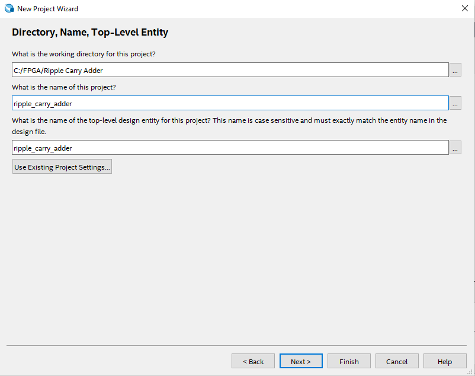
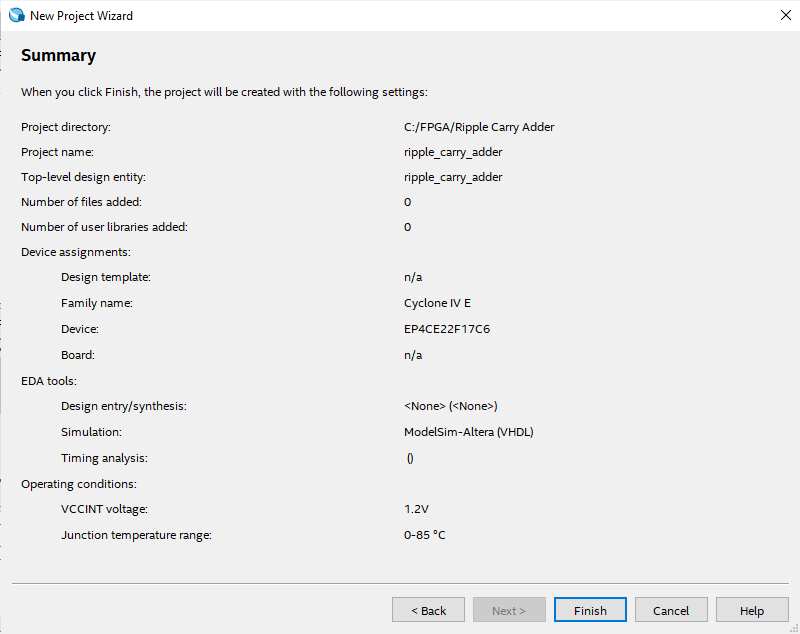
Note: File name should be same as entity name.
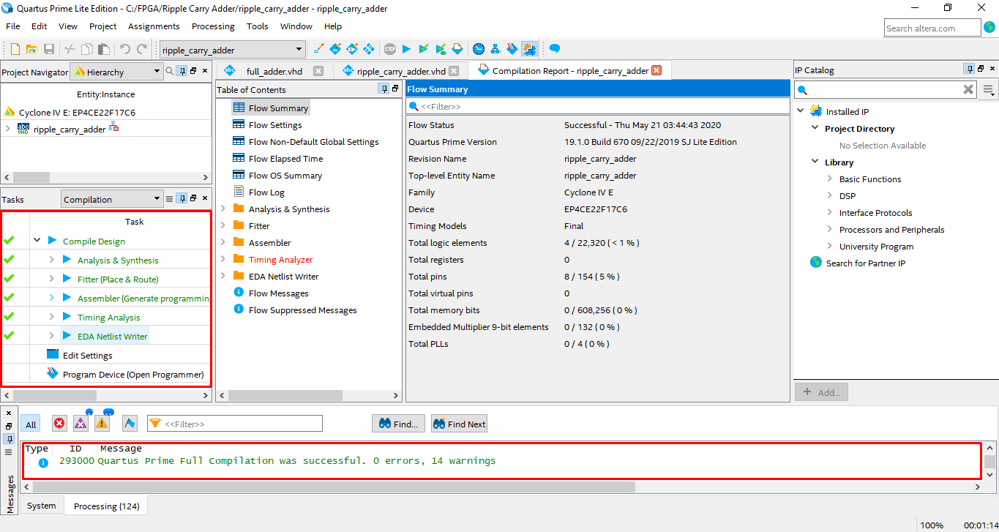
4. RTL Circuit of the implemented design
The Figure shown in step 2 below shows the RTL design of the ripple carry adder circuit. Here you can see 2 full adder modules are used. The design for these modules is incorporated from the full adder file.
Steps to get RTL circuit.
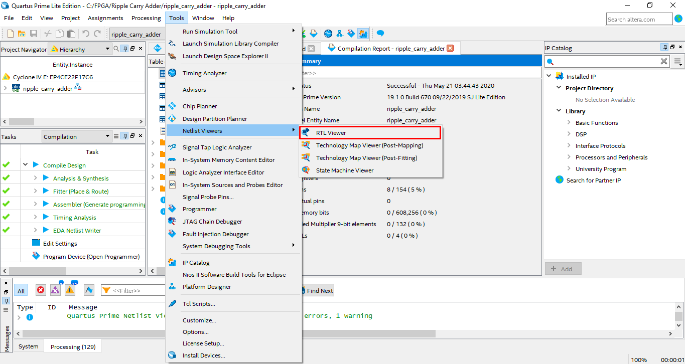
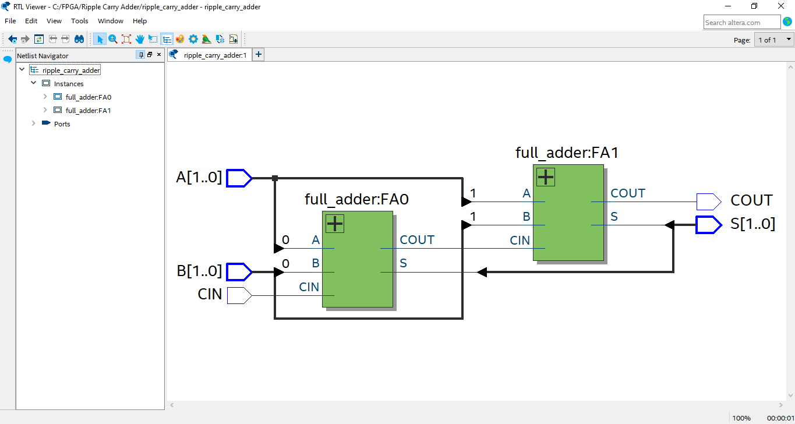
5. Implementing on Modelsim
For more detailed procedure on using ModelSim, refer Getting Started with Quartus section from Task 0. You can find Verilog HDL TestBench code below.
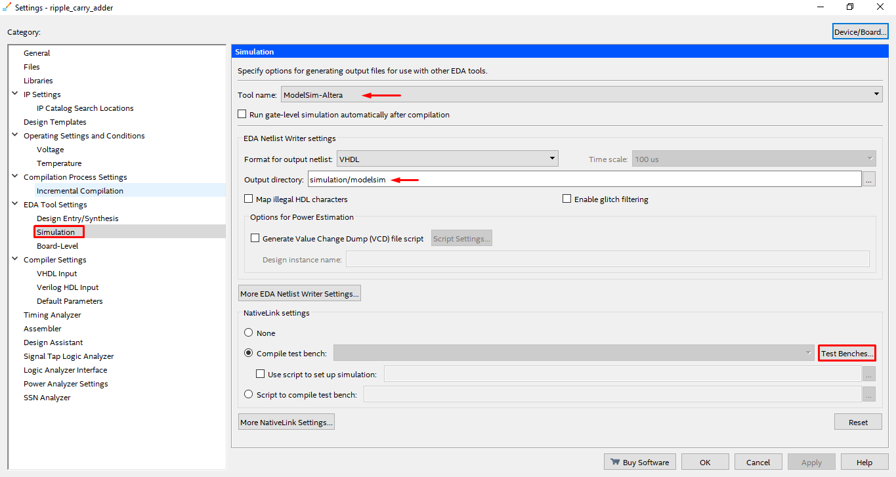
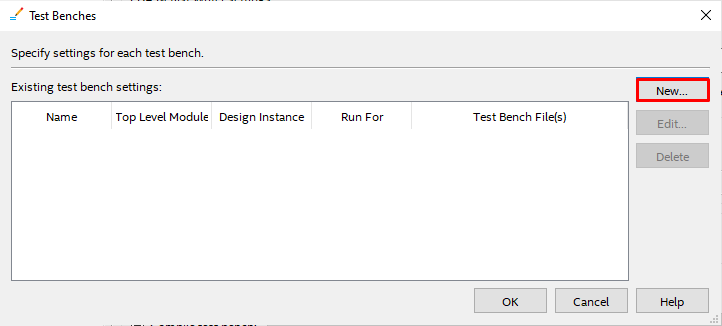
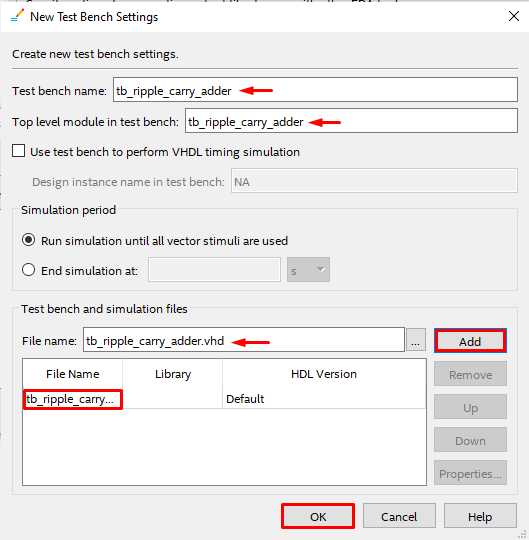
Functional Simulation using NativeLink Feature.
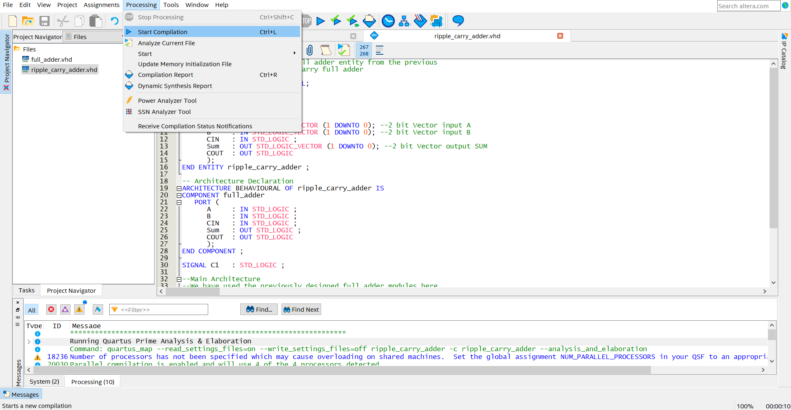
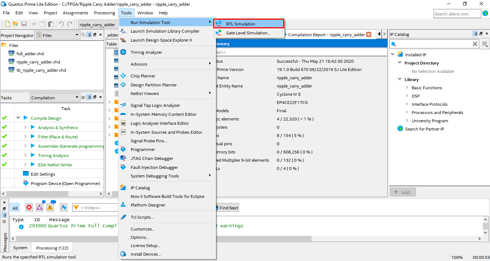
Note: If you cannot see the waveform, Click on the waveform window and select the Zoom all option.
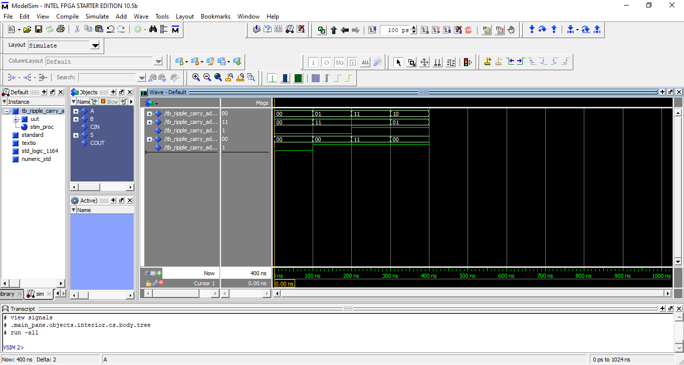
6. Testing the Design
6.1 Simulation waveform of the VHDL Design
The Result shown below can be verified by comparing it with the Truth Table provided in Introduction section. You can observe individual bits of a particular signal by clicking on the ’+’ icon.
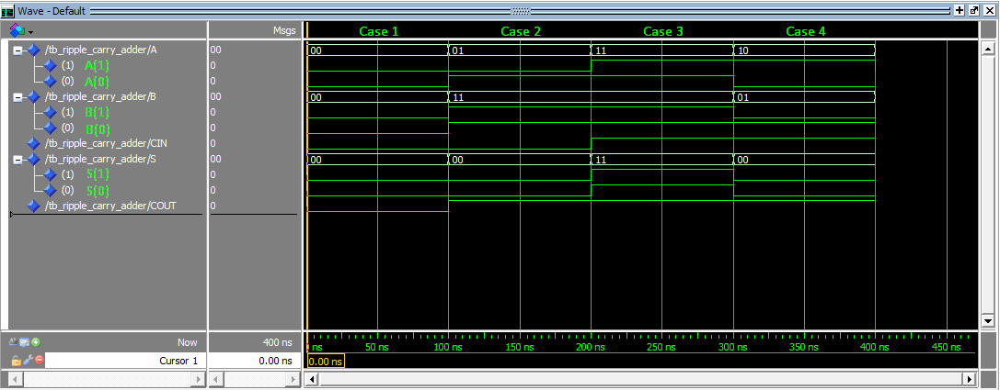
Seven Segment Display
1. Introduction
The Seven Segment display has seven LEDs arranged into the number eight. They are both cost-effective and easy to use. The Figure 1 shows a standard seven-segment display.

There are two types of seven-segment displays, Common Anode and Common Cathode. The Internal structure of both these types are identical except for the polarity of the LEDs and common terminal. The diagram below shows the internal structure of the common cathode seven-segment display(the one is used in this tutorial) and common anode seven-segment display.
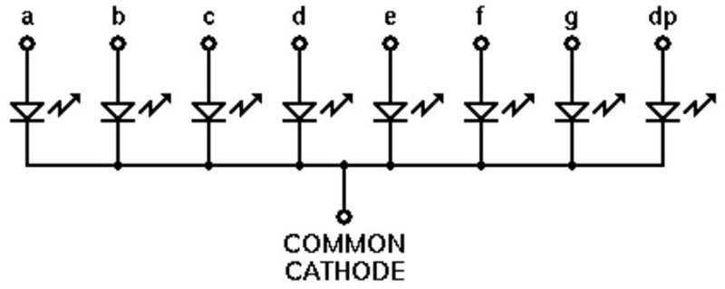

But, seven segment display does not work by directly supplying voltage to different segments of LEDs. First, our decimal number is changed to its BCD equivalent signal
then the BCD to seven segment decoder converts that signals to the a suitable format which is then fed to seven segment display.
This BCD to seven segment decoder has four input lines (A, B, C and D) and 7 output lines (a, b, c, d, e, f and g), this output is given to seven segment LED
display which displays the decimal number depending upon inputs.
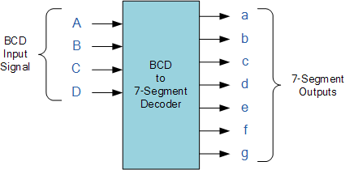
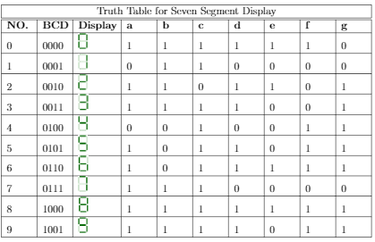
2. Code
2.1 Verilog HDL code for Seven Segment Display
/// Verilog code for sevent segment display
// Define module
module seven_segment (
input [3:0]bcd , // Define all I/O ports
output reg [6:0] display );
// Define Always block ,this block is executed every time the
// input BCD value changes .
always @ ( bcd )
begin
case (bcd )
4’ b0000 : display <=7 ’ b1111110 ;// output port ’display ’ is assigned with
// seven segment equivalent of input BCD (0)
4’ b0001 : display <=7 ’ b0110000 ;// output port ’display ’ is assigned with
// seven segment equivalent of input BCD (1)
4’ b0010 : display <=7 ’ b1101101 ;// output port ’display ’ is assigned with
// seven segment equivalent of input BCD (2)
4’ b0011 : display <=7 ’ b1111001 ;// output port ’display ’ is assigned with
// seven segment equivalent of input BCD (3)
4’ b0100 : display <=7 ’ b0110011 ;// output port ’display ’ is assigned with
// seven segment equivalent of input BCD (4)
4’ b0101 : display <=7 ’ b1011011 ;// output port ’display ’ is assigned with
// seven segment equivalent of input BCD (5)
4’ b0110 : display <=7 ’ b1011111 ;// output port ’display ’ is assigned with
// seven segment equivalent of input BCD (6)
4’ b0111 : display <=7 ’ b1110000 ;// output port ’display ’ is assigned with
// seven segment equivalent of input BCD (7)
4’ b1000 : display <=7 ’ b1111111 ;// output port ’display ’ is assigned with
// seven segment equivalent of input BCD (8)
4’ b1001 : display <=7 ’ b1111011 ;// output port ’display ’ is assigned with
// seven segment equivalent of input BCD (9)
default : display <=7 ’ b0000000 ;
endcase // end of case block
end // end of always block
endmodule
Test Bench
2.2 Verilog HDL Test Bench code for Seven Segment Display
/// Verilog code for test bench of sevensegment
// Define module
module tb_seven_segment ;
reg [3:0] bcd ; reg clk ; // Define the input
wire [6:0] display ; // Define the outputs
// Map the I/O ports with UUT
seven_segment uut (. bcd (bcd ) ,. display ( display ));
// Define Initial block
initial begin
bcd =4 ’ b0000 ; // Initialise the input ’bcd ’ value to ’0’
end
// Initialize input ports with different combination of BCD data
initial begin
bcd = 4’ b0001 ;#100;
bcd = 4’ b0011 ;#100;
bcd = 4’ b1000 ;#100;
bcd = 4’ b1001 ;#100;
#100;
end // end of initial block .
endmodule
3. Implementing on quartus II
For in-depth guide for creating a New Project follow Getting Started with Quartus section from Task 0. Verilog HDL code is provided in this tutorial.


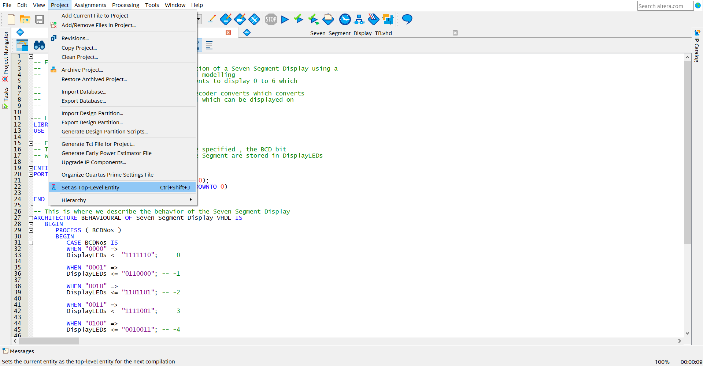
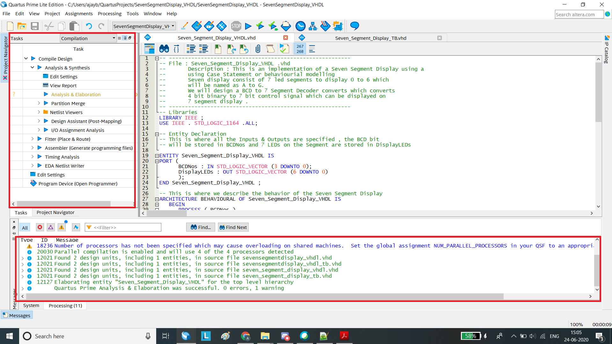
4. RTL Circuit of the implemented design
The Figure shown in step 2 below shows the RTL design of the Seven Segment Display circuit that we design using the above files. Here we can 7 select modules i.e 2:1 Muliplier, and one output and input block. The select lines for the Multiplier are from the 4-Bit DataBus input and the 7-Bit DataBus is the data line. If the input and the select lines matches for a particular Multiplier the the its 7 bit data is passed to the output.
Steps to get RTL circuit.

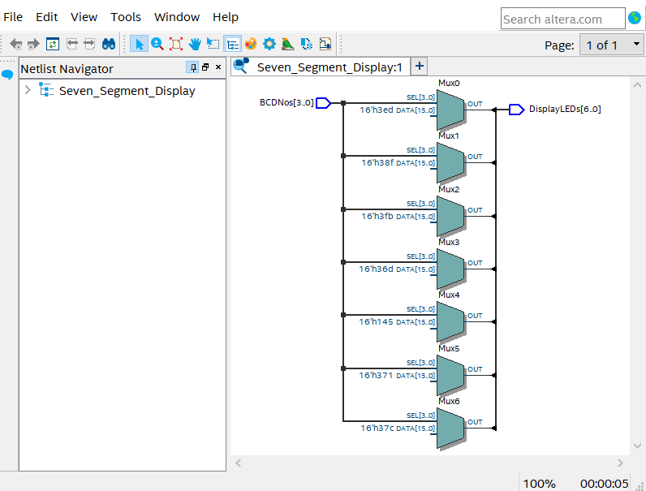
5. Implementing on Modelsim
For more detailed procedure on using ModelSim, refer Getting Started with Quartus section from Task 0. You can find Verilog HDL Testbench code below.
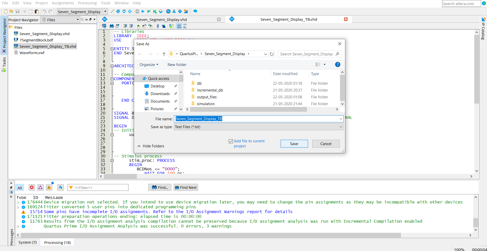
5.1 Without TestBench
We can simulate our design without using a testbench file by using creating a University Program VWF file. You can find detailed steps to create and add Input and Output nodes in this files in the Task 0 document.
| Input | Clock |
|---|---|
| DisplayLEDs[0] | 50ns |
| DisplayLEDs[1] | 100ns |
| DisplayLEDs[2] | 200ns |
| DisplayLEDs[3] | 400ns |
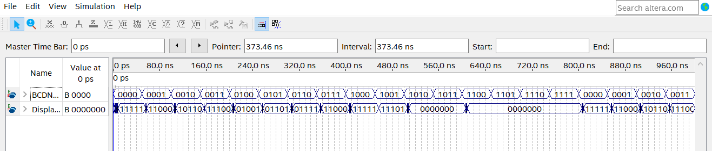

5.2 Functional Simulation using NativeLink Feature

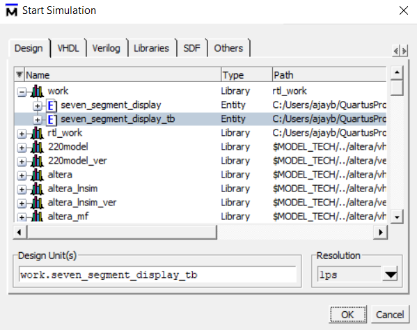


6. Testing the Design
6.1 Simulation waveform of our Design
The Result shown below can be verified by comparing it with the Truth Table.
1. Introduction
An arithmetic logic unit (ALU) is a digital circuit used to perform arithmetic and logic operations. It represents the fundamental building block of the central processing unit (CPU) of a computer. Modern CPUs contain very powerful and complex ALUs. In addition to ALUs, modern CPUs contain a control unit (CU).
Most of the operations of a CPU are performed by one or more ALUs, which load data from input registers. A register is a small amount of storage available as part of a CPU. The control unit tells the ALU what operation to perform on that data, and the ALU stores the result in an output register. The control unit moves the data between these registers, the ALU, and memory.
1.1 Problem Statement.
To Design an 8-bit ALU which performs different set of Arithmetic and logical operations based on the select input ’s’.It includes writing, compiling and simulating Verilog code in Quartus II and ModelSim respectively.
1.2 Block Diagram 8-bit ALU.

1.3 Implementation Table of 8-bit ALU.
The below table indicates the Arithmetic and Logical operations performed based on the select input ’s’ and also the output ’y’ obtained for for the given set of input ’a’ and ’b’. The Arithmetic opertaions that are performed here are:
| s | operation | a | b | y | carry | zero |
|---|---|---|---|---|---|---|
| 0000 | Addition | 11101110 | 11101110 | 00000000 11011100 | 1 | 0 |
| 0001 | Subtraction | 11101110 | 11101110 | 00000000 00000000 | 0 | 1 |
| 0010 | Increment | 11101110 | 11101110 | 00000000 11101111 | 0 | 0 |
| 0011 | Decrement | 11101110 | 11101110 | 00000000 11101101 | 0 | 0 |
| 0100 | Multiplication | 11101110 | 11101110 | 11011101 01000100 | 0 | 0 |
| 0101 | Division | 11101110 | 11101110 | 00000000 00000001 | 0 | 0 |
| 0110 | Bitwise AND | 11101110 | 11101110 | 00000000 11101110 | 0 | 0 |
| 0111 | Bitwise OR | 11101110 | 11101110 | 00000000 11101110 | 0 | 0 |
| 1001 | Bitwise XOR | 11101110 | 11101110 | 00000000 00000000 | 0 | 1 |
| 1010 | Bitwise NOR | 11101110 | 11101110 | 00000000 00010001 | 0 | 0 |
| 1001 | Bitwise XNOR | 11101110 | 11101110 | 00000000 00010001 | 0 | 0 |
| 1011 | Shift Left | 11101110 | 11101110 | 00000000 11111111 | 0 | 0 |
| 1100 | Shift Right | 11101110 | 11101110 | 00000000 11011100 | 1 | 0 |
| 1101 | Rotate Right | 11101110 | 11101110 | 00000000 01110111 | 0 | 0 |
| 1110 | Rotate Right | 11101110 | 11101110 | 00000000 01110111 | 0 | 0 |
| 1111 | Rotate Left | 11101110 | 11101110 | 00000000 11011101 | 0 | 0 |
2. Verilog HDL Codes for 8-bit ALU
2.1 RTL Description
// Verilog Design for a 8 -bit ALU .
/* This design will Perform Arithmetic and Logical operations
based on the select input */
// Define module .
module ALU (
input [ 7 : 0 ]a,b,
input [ 3 : 0 ]s, // Define Inputs a,b and select line input s
input en ,clk , // Define clock and enable signal
output [ 15 : 0 ] y, // Define 16 bit ALU output
output carry , zero // Define Flag output
);
reg [ 7 : 0 ] a_in ; // Local registers for input 'a '.
reg [ 7 : 0 ] b_in ; // Local registers for input 'b '.
reg [ 1 : 0 ] flags ;
/* Local register to store carry bit in flags [0] &
zero flag bit in flags [1] */
reg [ 15 : 0 ] out_y ; // Local register to store 16 bit output 'y '.
always @( posedge clk , negedge en)
begin
if(en ==1) // if en =1 , reset all outputs
begin
a_in <= 0;
b_in <= 0;
y <= 0;
carry <= 0;
zero <= 0;
end
else
begin
a_in <= a; // if en =1 , latch all output flit flops
b_in <= b;
y <= out_y ;
carry <= flags [ 0 ] ;
zero <= flags [ 1 ] ;
end
end
always @ (a_in ,b_in ,s)
begin
flags = 2' b00; // set flags to zero
case (s)
4'd0:
begin
out_y ={8 'd0 ,( a_in + b_in )}; // addition
flags [ 0 ] = out_y [ 8 ] ; // carry is set if generated .
end
4'd1:
begin
out_y ={8 'd0 ,( a_in - b_in )}; // Subtraction
flags [ 0 ] = out_y [ 8 ] ; // carry is set if Borrow is taken .
end
4'd2:
begin
out_y ={8 'd0 ,( a_in + 1'b1 )}; // Increment
flags [ 0 ] = out_y [ 8 ] ; // carry is set if generated .
end
4'd3: begin
out_y ={8 'd0 ,( a_in - 1'b1 )}; // Decrement
flags [ 0 ] = out_y [ 8 ] ; // carry is set if Borrow is taken .
end
4'd4: out_y =( a_in * b_in ); // Multiplication .
4'd5: out_y =( a_in / b_in ); // Division
4'd6: out_y ={8 'd0 ,( a_in & b_in )}; // Bitwise AND
4'd7: out_y ={8 'd0 ,( a_in | b_in )}; // Bitwise OR
4'd8: out_y ={8 'd0 ,( a_in ^ b_in )}; // Bitwise XOR
4'd9: out_y ={8 'd0 ,~( a_in & b_in )}; // Bitwise NAND
4' d10: out_y ={8 'd0 ,~( a_in | b_in )}; // Bitwise NOR
4' d11: out_y ={8 'd0 ,~( a_in ^ b_in )}; // Bitwise XNOR
4' d12:
begin
flags [ 0 ] = a_in [ 7 ] ; // Update carry flag
out_y ={8 'd0 ,( a_in < <1)}; // Shift Left
end
4' d13: begin
flags [ 0 ] = a_in [ 0 ] ; // Update carry flag
out_y ={8 'd0 ,( a_in > >1)}; // Shift Right
end
4' d14: out_y ={8 'd0 , a_in [ 0 ] ,a_in [ 7 : 1 ] }; // right rotate
4' d15: out_y ={8 'd0 , a_in [ 6 : 0 ] ,a_in [ 7 ] }; // left rotate
default : out_y =16 ' d0;
endcase
if( out_y == 0)
flags [ 1 ] = 1; // set zero flag if output is zero
end // End of case structure .
endmodule
2.2 Testbench for 8-bit ALU.
// Verilog code for TestBench of 8 -bit ALU
// Define module
module tb_ALU ;
reg [ 7 : 0 ]a; reg [ 7 : 0 ]b; reg [ 3 : 0 ]s; // Define I/O ports
reg clk; reg en;
wire [ 15 : 0 ]y;
wire carry ;
wire zero ;
// Map all the I/O ports with DUT .
ALU uut (.a(a) ,.b(b) ,.s(s) ,. en(en ) ,. clk(clk ) ,.y(y) ,. carry ( carry ) ,. zero ( zero ));
// Initialise Input pins with 0
initial begin
a = 0;
b = 0;
s = 0;
en =1;
clk = 0;
end
always
begin clk = ~clk ;#5; end // Generate a clock of period 10 units
initial begin
#50;
a = 8' b11101110 ; // Initialise 8bit input value for a & b.
b = 8' b11101110 ;#29;
// Initialise 's' value to perform different operations .
s = 4' b0001 ;#30;
s = 4' b0010 ;#30;
en =0
s = 4' b0001 ;#30;
s = 4' b0010 ;#30;
s = 4' b0011 ;#30;
s = 4' b0100 ;#30;
s = 4' b0101 ;#30;
s = 4' b0110 ;#30;
s = 4' b0111 ;#30;
s = 4' b1000 ;#30;
s = 4' b1001 ;#30;
s = 4' b1010 ;#30;
s = 4' b1011 ;#30;
s = 4' b1100 ;#30;
s = 4' b1101 ;#30;
s = 4' b1110 ;#30;
s = 4' b1111 ;#30;
end // End of initial block
endmodule // End of module .
3. Implementing on quartus II
Follow the below steps :


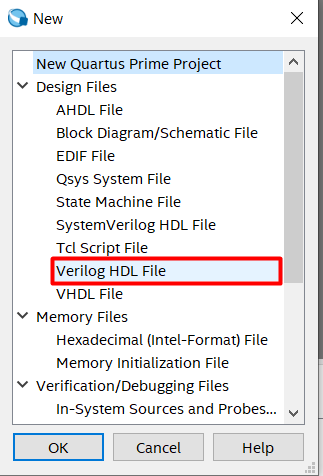
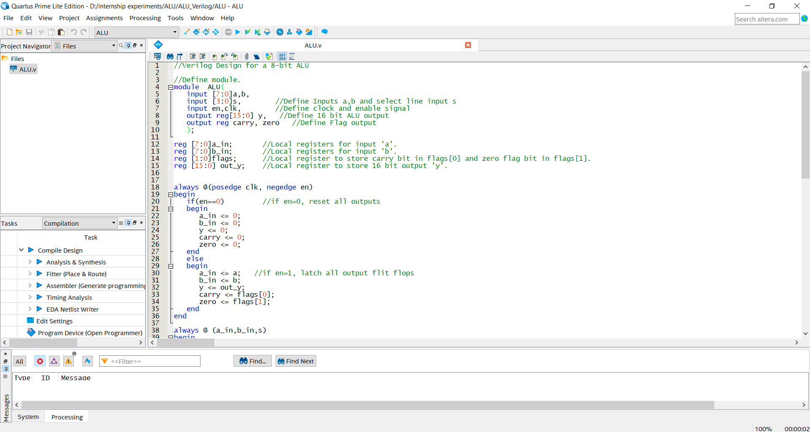
Note: File name should be same as module name.

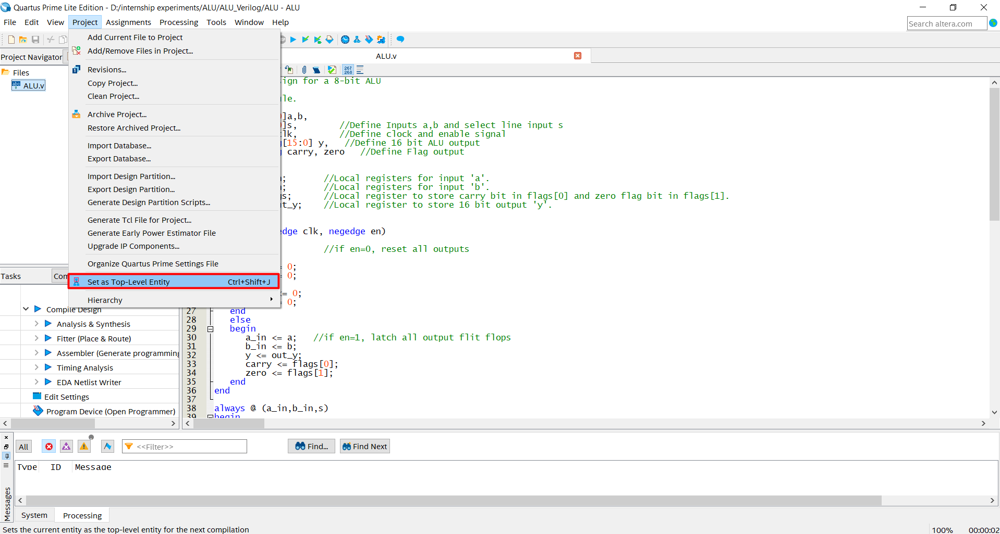
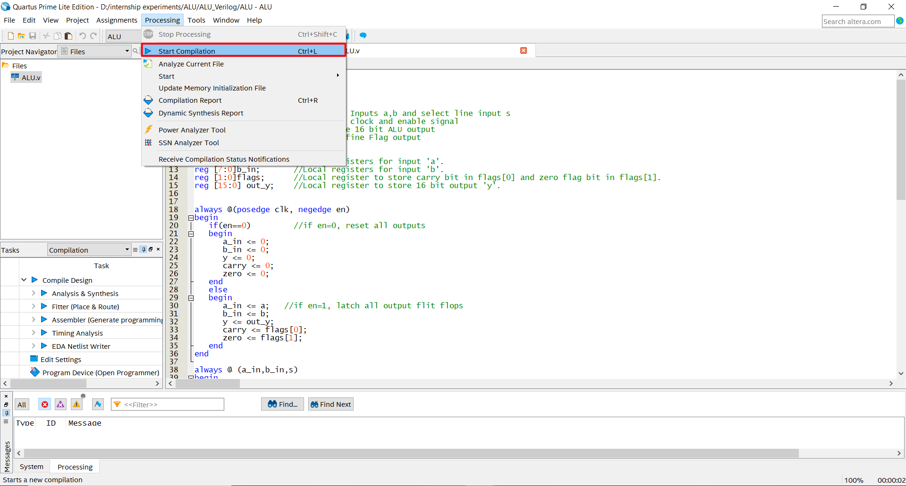

4. RTL Circuit of the implemented design
Steps to get RTL circuit.

5. Implementing on Modelsim
For more detailed procedure on using ModelSim, refer Getting Started with Quartus section from Task 0. You can find Verilog HDL TestBench code below.

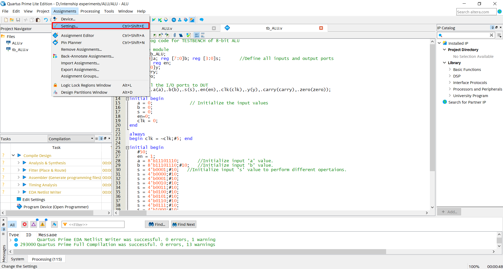
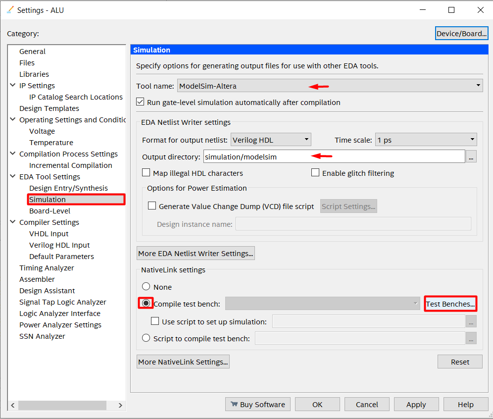


Functional Simulation using NativeLink Feature
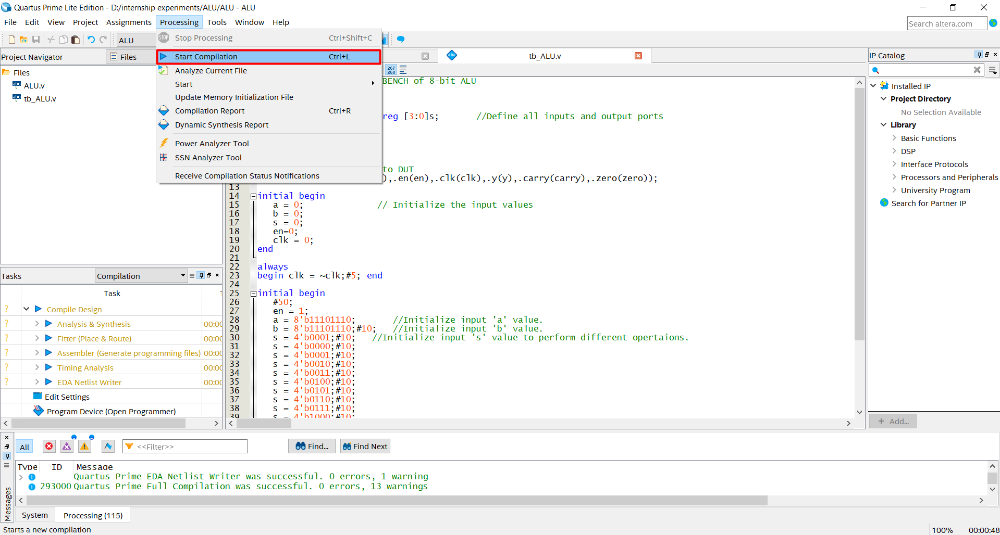
Note: If you cannot see the graph, Click on the waveform window and select the Zoom all option.
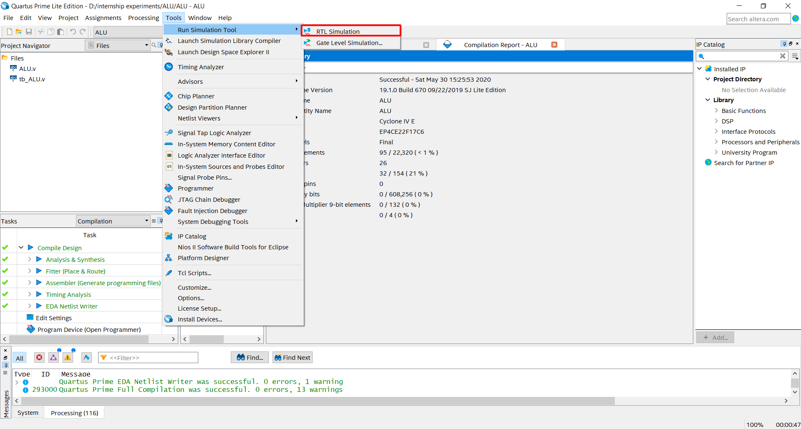
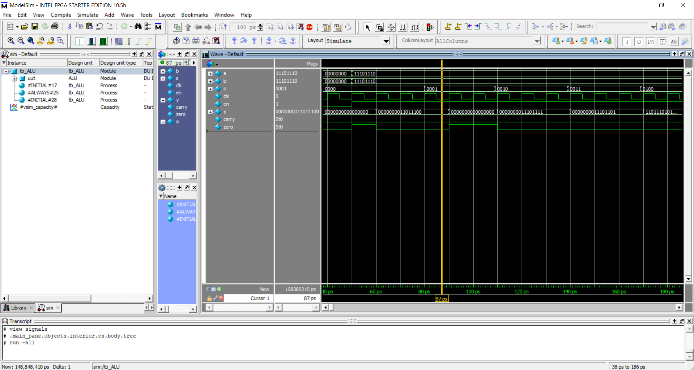
6. Simulation Results
Simulation waveform of the Verilog Design
The Result shown below can be verified by comparing it with the Truth Table provided in section 1.4 above. You can observe individual bits of a particular signal by clicking on the ’+’ icon.
Observation: Based on the select input ’s’ the opertion is performed on input ’a’ and ’b’ and the 16 bit result is generated on output line ’y’.The carry flag is raised when carry is generated and Zero flag is raised if the result is zero during the operation.

Universal Shift Register
1. Introduction
1.1 What is a Register?
Flip flops can be used to store a single bit of binary data (1 or 0). However, in order to store multiple bits of data, we need multiple flip flops. N flip flops are to be connected in an order to store n bits of data. A Register is a device which is used to store such information. It is a group of flip flops connected in series used to store multiple bits of data.
1.2 Shift Registers
The information stored within these registers can be transferred with the help of Shift Registers. Shift Register is a group of flip flops used to store multiple bits of data. The bits stored in such registers can be made to move within the registers and in/out of the registers by applying clock pulses. An n-bit shift register can be formed by connecting n flip-flops where each flip flop stores a single bit of data.
Shift registers are basically of 4 types. These are:
1.3 Serial-In Serial-Out Shift Register
The shift register, which allows serial input (one bit after the other through a single data line) and produces a serial output is known as Serial-In Serial-Out shift register. Since there is only one output, the data leaves the shift register one bit at a time in a serial pattern, thus the name Serial-In Serial-Out Shift Register. The logic circuit given below shows a serial-in serial-out shift register. The circuit consists of four D flip-flops which are connected in a serial manner. All these flip- flops are synchronous with each other since the same clock signal is applied to each flip flop.

1.4 Serial-In Parallel-Out Shift Register
The shift register, which allows serial input (one bit after the other through a single data line) and produces a parallel output is known as Serial-In Parallel-Out shift register.
The logic circuit given below shows a serial-in-parallel-out shift register. The circuit consists of four D flip-flops which are connected. The clear (CLR) signal is connected in addition to the clock signal to all the 4 flip flops in order to RESET them. The output of the first flip flop is connected to the input of the next flip flop and so on. All these flip-flops are synchronous with each other since the same clock signal is applied to each flip flop.

1.5 Parellel-In Serial-Out Shift Register
The PISO(Parellel-in Serial-out) shift register has one of the most important appli-
cation among the shift register, and it is to convert parellel data into serial data,
which is extensively used in communication.
The circuit consists of four D flip-flops which are connected. The clock input is
directly connected to all the flip flops but the input data is connected individually
to each flip flop through a multiplexer at the input of every flip flop. The output of
the previous flip flop and parallel data input are connected to the input of the MUX
and the output of MUX is connected to the next flip flop. All these flip-flops are
synchronous with each other since the same clock signal is applied to each flip flop.

1.6 Parallel-In Parallel-Out Shift Register
The shift register, which allows parallel input (data is given separately to each flip flop and in a simultaneous manner) and also produces a parallel output is known as Parallel-In parallel-Out shift register.
The logic circuit given below shows a parallel-in-parallel-out shift register. The circuit consists of four D flip-flops which are connected. The clear (CLR) signal and clock signals are connected to all the 4 flip flops. In this type of register, there are no interconnections between the individual flip-flops since no serial shifting of the data is required. Data is given as input separately for each flip flop and in the same way, output also collected individually from each flip flop.

1.7 Universal Shift Register
A Universal shift register is a register is a combination of all the above 4 shift registers with. Universal shift registers are used as memory elements in computers. A Unidirectional shift register is capable of shifting in only one direction. A bidirectional shift register is capable of shifting in both the directions. The Universal shift register is a combination design of bidirectional shift register and a unidirectional shift register with parallel load provision.


2. Verilog HDL Code for Universal Shift Register
The Universal Shift Register has been implemented as it contains all different types of shift registers in itself.
2.1 RTL Description
module Universal_Shift_Register_Verilog(
input [3:0]i, //Define pins for parellel input
input [1:0]sel, //Define select line pins to choose the operation
input clk,rst,il,ir, //Define clock,reset, serial input for
//shift left and serial input for shift right
output reg [3:0]out_bit); //Define output pins
always @ (posedge clk, negedge rst ) //Execute the logic whenever positive edge of
//clock or negative edge of Reset is encountered
begin
if(rst==0) //if rst = 0, then clear the output
out_bit=4'b000;
else
begin
case(sel) //check select lines to determine type of
//operation
2'b00:begin end //Retain the data
2'b01:begin
out_bit={ir,out_bit[3:1]}; //shift right operation
end
2'b10:begin
out_bit={out_bit[2:0],il}; //Shift left operation
end
2'b11:begin
out_bit = i; //parellel input-output operation
end
default:begin end
endcase
end
end
endmodule
2.2 Testbench
module Universal_Shift_Register_tb;
reg [3:0]i; reg[1:0]sel; reg clk; reg rst; reg il;reg ir; //Define all input ports
wire [3:0]out_bit; //Define all output ports
Universal_Shift_Register_Verilog uut(.i(i), //Map testbench ports with DUT ports
.sel(sel),
.clk(clk),
.rst(rst),
.out_bit(out_bit),
.il(il),
.ir(ir));
initial begin
rst = 1'b0; //Initialze values on all input pins
clk = 0;
ir = 0;
il = 0;
sel = 2'b00;
i = 4'b0000;
end
always
begin
clk = ~clk; #5; //Define Clock operation
end
initial begin
#50;
rst = 1; #50 //Different Combinations of input
ir = 1;
sel = 2'b01;#10;
ir = 0;#10;
ir = 1;#10;
ir = 0;#10;
il = 1;
sel = 2'b00;#50
sel = 2'b10;
il = 1;#10
il = 0;#10
il = 0;#10
sel = 2'b11;#5
i = 4'b1111;
#100;
end
endmodule
3. Implementation in Quartus Prime
To Implement the design in Quartus Software, follow these steps(For more detailed information on the following steps, Refer Getting Started with Quartus section from Task 0.
Note: The language used is Verilog HDL.
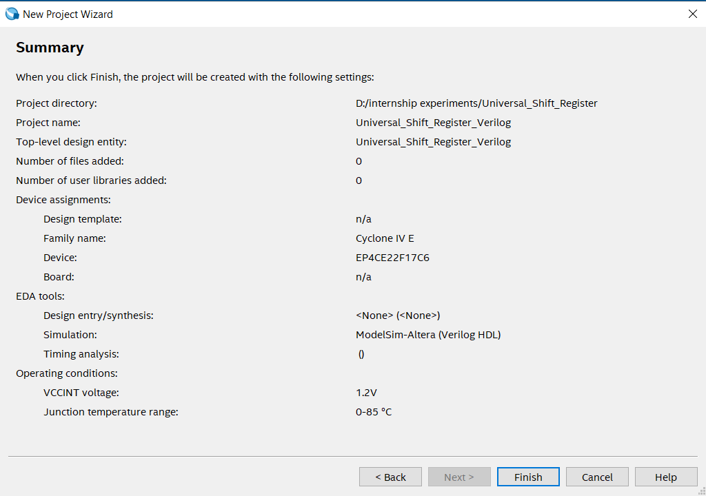
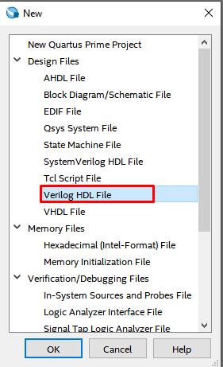
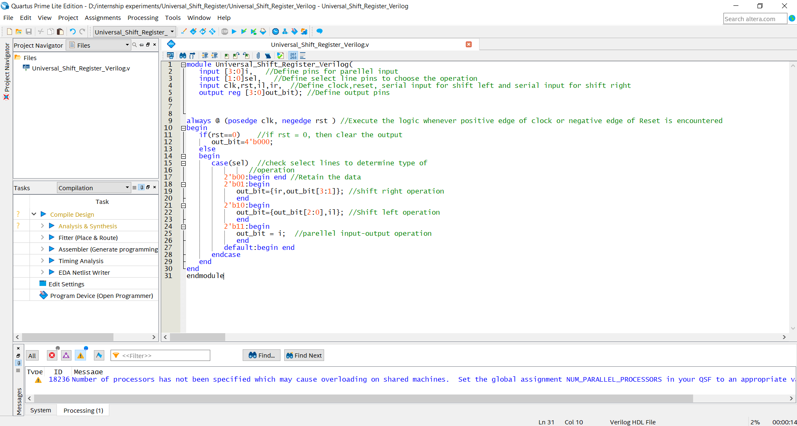
Note: If module name is different from project name, then manually set the verilog file as Top-Level Module by:Right Click on <File_name> -> Set as Top-Level Entity
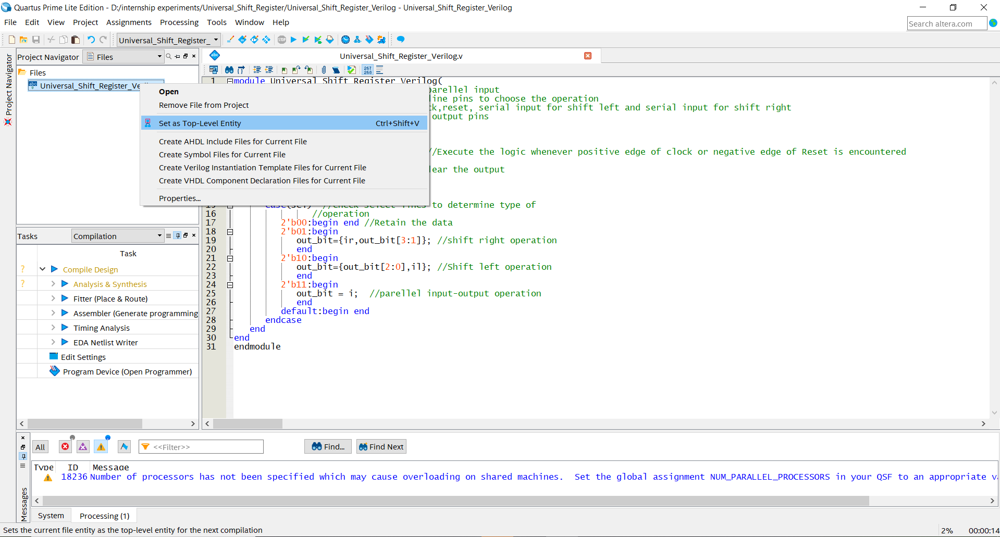
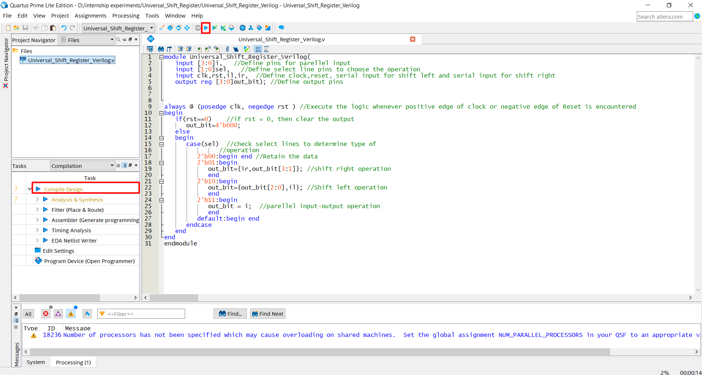
Note: The Compilation is complete when you see these Green Tick marks.If even one of them have Red Cross it means the compilation has failed
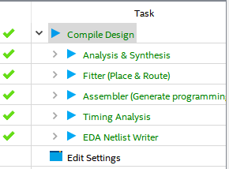
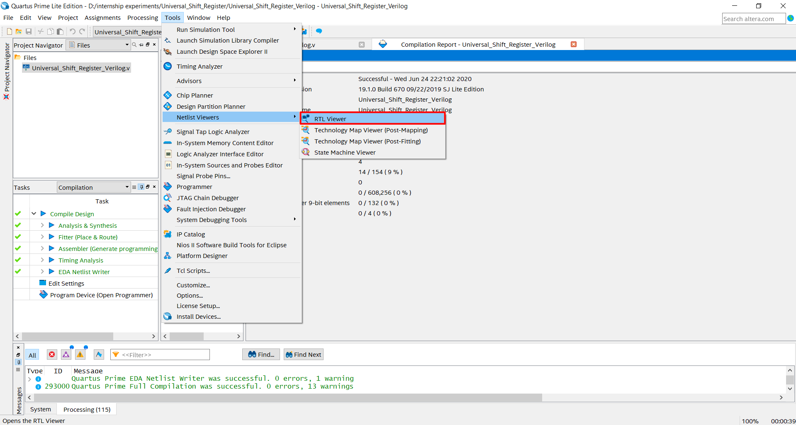
4. RTL Circuit of the Implemented Design
The below RTL circuit is the result of our design:
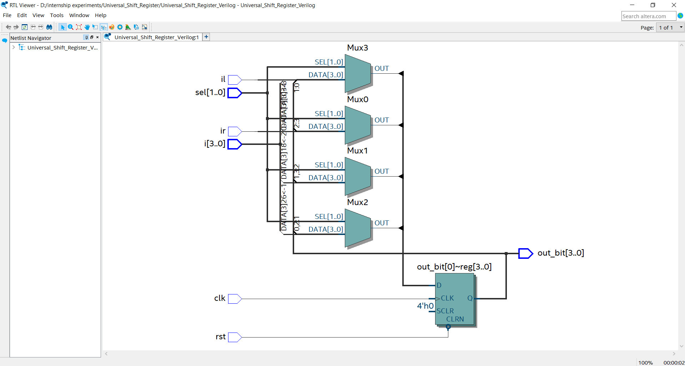
5. Implementing in ModelSim
The TestBench shown here is a Verilog TestBench. For more detailed procedure on using ModelSim, Refer Getting Started with Quartus section from Task 0.
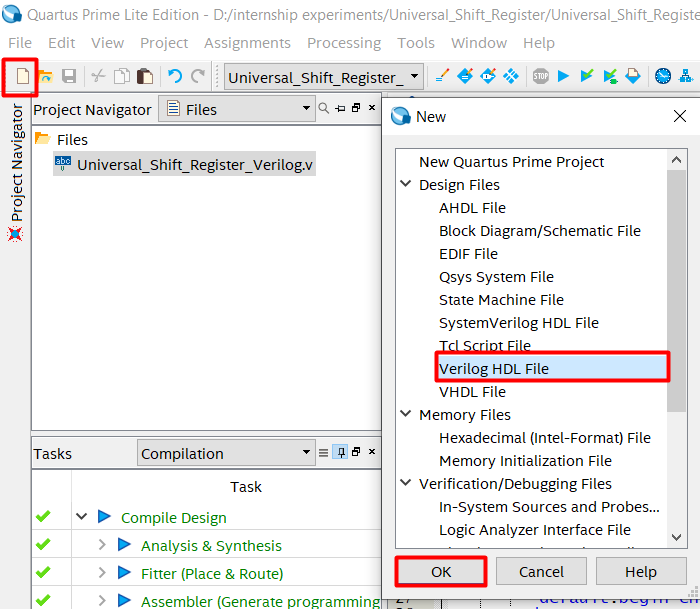
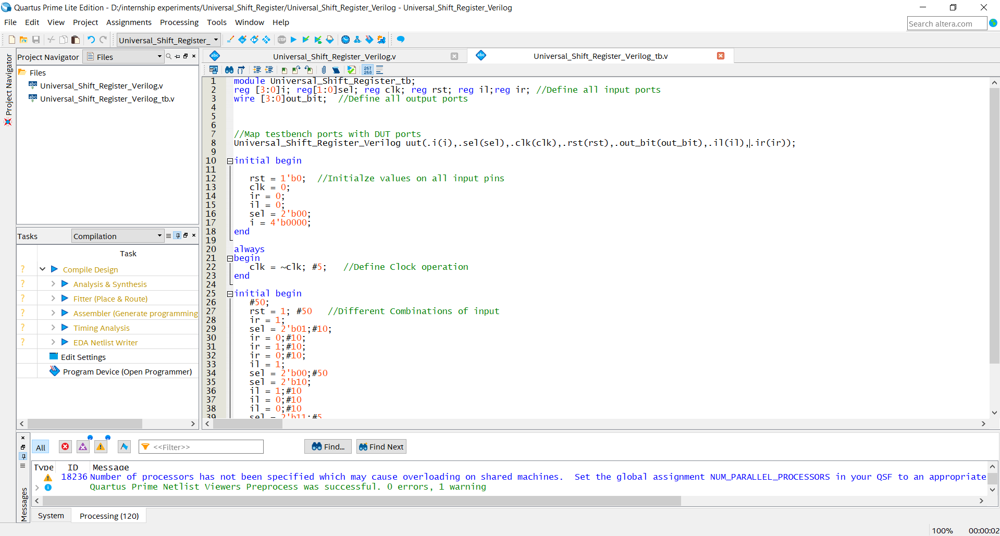
Note: The APPLY button will be highlighted after OKAY has been clicked on all previous windows
6. Simulation Results
The waveform shown below is the result of the simulation. Initially when rst=0, the output is reset to 0000. After 50 ns, rst is set and the register is in normal operation. When sel = 00, the register retains the previous data. At 0.1 ns, sel=01, so the shift register is set to ’Shift right operation’. At every consecutive clock cycle until 0.14 ns, it can be seen that the shift register ouput is shifted right while the MSB is loaded with the value of ’ir’. At 0.14ns,sel=00, so until 0.19ns, the shift register retains the value. At 0.19 ns, sel=10, The shift register is set to Shift left Operation and at each consecutive clock cycle, the Shift register shifts the data left and loads the LSB with data on the ’il’ pin. Finally, at 0.22 ns, sel=11, this sets the shift register to Parellel input mode, so for every consecutive clock cycle, the shift register is updated with the data on the 4 bit parellel input ’i’.
Advanced Resources
In this section you will learn :